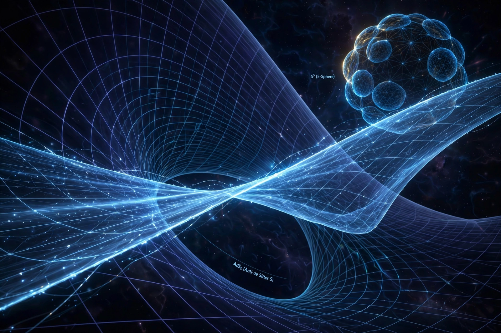

From Wikipedia, the free encyclopedia

String theory in anti-de Sitter space is the gravitational side of the AdS/CFT correspondence. In the original and best-understood example, type IIB string theory on AdS5×S5 — the near-horizon geometry of a stack of D3-branes — is conjectured to be exactly equivalent to four-dimensional 𝒩 = 4 supersymmetric Yang–Mills theory living on the boundary.
Juan Maldacena proposed the duality in 1997, arguing from the dual descriptions of D-branes: the same stack of branes admits an open-string description (a gauge theory) at low energies and a closed-string description (supergravity on AdS) in the curved near-horizon limit. When the 't Hooft coupling of the gauge theory is large, the AdS radius is large in string units and classical supergravity is a good approximation; when the coupling is small, perturbative gauge theory works but the string side is strongly curved. The duality thus trades hard problems on one side for easy ones on the other.
Both sides of the AdS5 example appear to be integrable: the worldsheet sigma model is classically integrable, and the gauge theory's dilatation operator maps to an integrable spin chain. This has enabled exact computations of the spectrum of anomalous dimensions interpolating between weak and strong coupling — some of the strongest quantitative evidence for the correspondence.